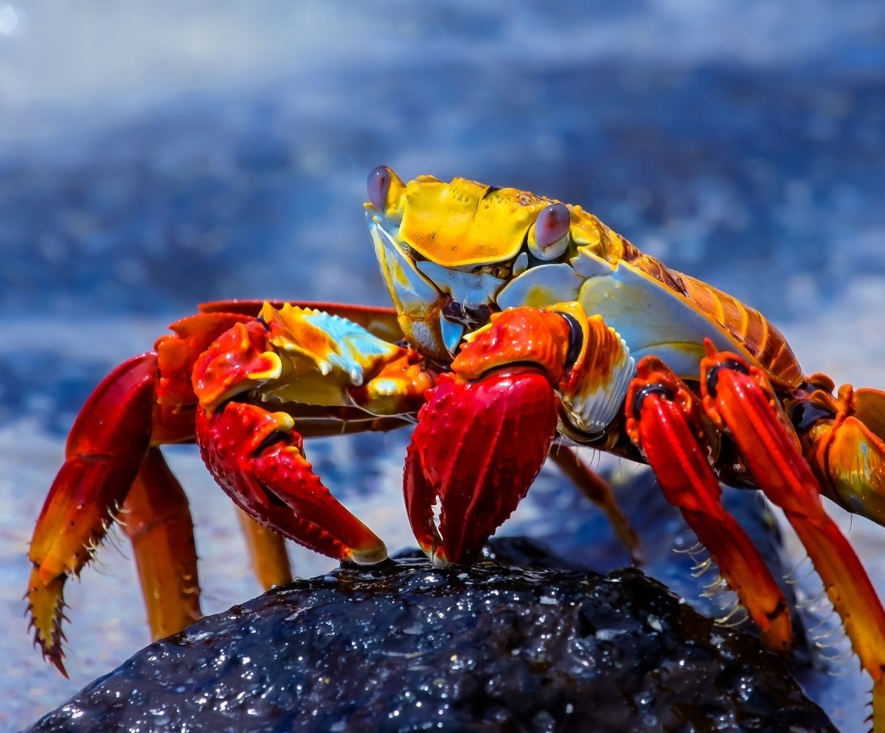
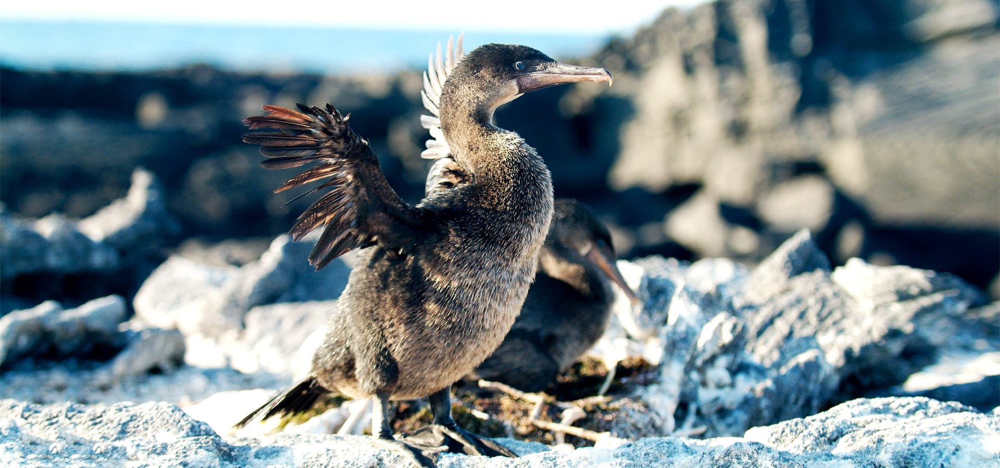
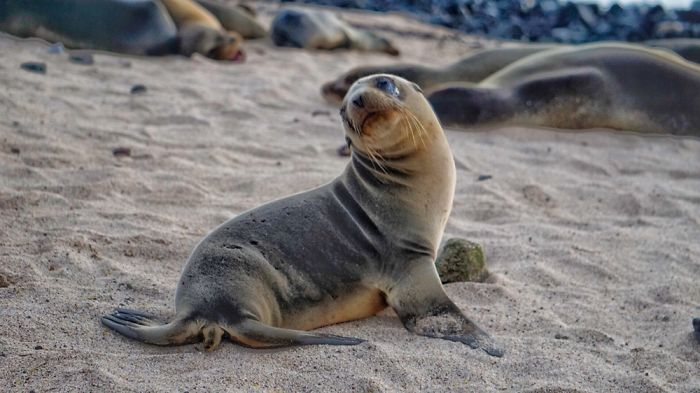

เต่ายักษ์กาลาปาโกส
Binomial name: Chelonoidis nigra complex
Kingdom: Animalia
Phylum: Chordata
Class: Reptilia
Order: Testudines
Family: Testudinoidea
Genus: Chelonoidis
Species: C. n. complex

เพนกวิน

นับเป็นเต่าบกที่มีขนาดใหญ่ที่สุดในโลก มีลักษณะเด่น คือ กระดองหนา มีสีเทาเข้มจนถึงสีดำ มีคอที่ยาวมากเพื่อใช้ในการหาอาหาร หัวมีขนาดเล็ก ตัวผู้มีกระดองยาว 122 เซนติเมตร น้ำหนักได้ถึง 250 กิโลกรัม ตัวเมียจะตัวเล็กกว่า กระดองยาว 91 เซนติเมตร น้ำหนักโดยเฉลี่ยประมาณ 159 กิโลกรัม วางไข่ประมาณ 9-25 ฟอง ไข่จะฟักในอุณหภูมิประมาณ 35-40 องศาเซลเซียส แต่จะเหลือลูกเต่าไม่ถึงครึ่งที่มีชีวิตรอดจากการวางไข่แต่ละครั้ง ชอบอาศัยในที่พุ่มไม้เตี้ย ในบึง และเนินทรายชายฝั่ง และมีอายุยืนได้นานมากกว่า 100 ปี หรือเกือบ ๆ 200 ปี เต่ายักษ์กาลาปาโกส เป็นเต่าที่กินพืชเป็นอาหาร โดยสามารถกินพืชที่ขึ้นที่แห้งแล้งชนิดต่าง ๆ ได้อย่างหลากหลาย รวมถึงพืชที่มีหนามแหลมอย่างกระบองเพชรด้วย และจากการศึกษาจากนักวิทยาศาสตร์พบว่าเมื่อถึงฤดูแล้งที่สภาพอาหารเหือดแห้ง เต่ายักษ์กาลาปาโกสสามารถปรับตัวให้หัวใจเต้นเพียงครั้งละ 1 ครั้งต่อ 1 นาทีได้ด้วย เพื่อประหยัดพลังงานในการเผาผลาญอาหาร และในช่วงฤดูผสมพันธุ์ จากการติดเครื่องติดตามดาวเทียมพบว่า เต่ายักษ์กาลาปาโกสมีพื้นที่อพยพ 6 ไมล์ จากยอดภูเขาไฟอัลเซโด มาจนถึงระดับน้ำทะเล เพื่อผสมพันธุ์ ซึ่งบางตัวอาจใช้เวลาเดินทางนานถึง 2 เดือน จัดเป็นสิ่งมีชีวิตเฉพาะถิ่นที่พบเฉพาะบนหมู่เกาะกาลาปาโกส กลางมหาสมุทรแปซิฟิกตอนใต้ ในเขตของประเทศเอกวาดอร์เท่านั้น และก็ได้มีชนิดย่อยแตกต่างกันออกไปตามลักษณะของกระดอง และขนาดลำตัว ซึ่งจะอาศัยกระจายกันไปตามเกาะต่าง ๆ ในหมู่เกาะกาลาปาโกส และเกาะอื่น ๆ ที่ใกล้เคียงกัน ทั้งนี้เป็นไปตามทฤษฎีวิวัฒนาการที่กระดองของเต่าจะปรับเปลี่ยนไปตามลักษณะการกินอาหารตามแต่ละภูมิประเทศที่อาศัย เช่น บ้างก็เว้าตรงคอ, บ้างก็โค้งกลมเหมือนโดม หรือบ้างก็เหมือนอานม้า โดยสามารถแบ่งออกได้ถึง 14 ชนิดย่อย (ดูในตาราง) และบางชนิดก็สูญพันธุ์ไปแล้วเช่นกัน โดยเต่ายักษ์กาลาปาโกส มีชื่อเสียงอย่างยิ่ง เมื่อ ชาร์ลส์ ดาร์วิน นักชีววิทยาชาวอังกฤษ ได้เดินทางมายังที่นี่เมื่อปี ค.ศ. 1835 ดาร์วินได้พบกับเต่ายักษ์กาลาปาโกสครั้งแรก เมื่อเต่ายักษ์กาลาปาโกสเดินออกมาจากพุ่มไม้หนาม และกัดกินใบของพืชตระกูลแอปเปิลที่มีพิษเป็นอาหาร และดาร์วินสังเกตว่า กระดองเต่าที่อาศัยอยู่บนเกาะต่าง ๆ กันนั้นมีรูปร่างต่างกัน ซึ่งข้อสังเกตการณ์นั้นกลายเป็นหนึ่งในแรงบันดาลใจของทฤษฎีการคัดเลือกโดยธรรมชาติที่ดาร์วินเสนอขึ้นมา จนโด่งดังมีชื่อเสียงขึ้นมา กระดองเต่ายักษ์กาลาปาโกสที่จัดแสดง ณ สวนสัตว์พาต้า โดยเต่ายักษ์กาลาปาโกสตัวที่มีชื่อเสียง ได้แก่ "จอร์จผู้เดียวดาย" ที่มีอายุมากกว่า 100 ปี เป็นตัวผู้ได้ตายลงเมื่อวันที่ 24 มิถุนายน ค.ศ. 2012 จอร์จเป็นเต่าชนิดย่อย C. n. abingdonii ที่เป็นชนิดที่พบบนเกาะพินต้า ซึ่งเป็นเกาะที่เล็กที่สุดของหมู่เกาะกาลาปาโกส[8] และเชื่อกันว่าจอร์จนี้เป็นตัวสุดท้ายของโลกของเต่าชนิดย่อยนี้ เป็นเต่าในสถานที่เลี้ยงในกรุงกีโต เมืองหลวงของเอกกาดอร์ มีความพยายามจากนักวิทยาศาสตร์หลายต่อหลายครั้งที่จะพยายามเพาะขยายพันธุ์ ด้วยการให้จอร์จผสมพันธุ์กับเต่าตัวเมีย แต่ก็ไม่สำเร็จเมื่อเต่าตัวเมียวางไข่ 2 ครั้ง แต่ก็เป็นหมันทั้งหมด เพราะจอร์จอายุมากแล้ว จึงได้รับชื่อว่า "จอร์จผู้เดียวดาย" ปัจจุบัน มีเต่ายักษ์กาลาปาโกสอาศัยอยู่ในธรรมชาติประมาณ 20,000 ตัว ซึ่งเป็นผลมาจากการอนุรักษ์และขยายพันธุ์ จากที่เคยเหลืออยู่แค่ 3,000 ตัว เมื่อปี ค.ศ. 1974 จากการถูกรุกรานและฆ่าโดยมนุษย์ โดยศูนย์เพาะขยายพันธุ์ใหญ่ที่สุด คือ สถานีวิจัยชาร์ลส์ ดาร์วิน บนเกาะซานตาครูซ ของหมู่เกาะกาลาปาโกส ซึ่งมีด้วยกันหลายจุด ครอบคลุมเต่ายักษ์กาลาปาโกสทุกเพศ ทุกวัย ตั้งแต่เกิดจนตาย เต่าวัยอ่อนอายุไม่เกิน 2 ปี จะถูกดูแลเป็นอย่างดีให้พ้นจากศัตรูตามธรรมชาติที่มีอยู่มากมาย โดยบนกระดองจะมีการแต้มสีต่าง ๆ เป็นจุด เพื่อเรียกแทนค่าหมายเลขประจำตัว ตามชนิดย่อยที่แตกต่างกันตามไปตามเกาะที่เป็นแหล่งต้นกำเนิด ซึ่งเต่ายักษ์กาลาปาโกสจะอาศัยอยู่ที่นี่จนอายุได้ 4-6 ปี และผ่านการวัดขนาดความกระดองให้ได้ประมาณ 20-25 เซนติเมตร จึงถือว่าเติบโตได้ตามปกติ และนำไปปล่อยสู่แหล่งเลี้ยงที่มีการจัดสภาวะแวดล้อมให้ใกล้เคียงกับธรรมชาติมากที่สุด และมีรายงานจากนักวิทยาศาสตร์พบว่า ยังมีเต่าในชนิดย่อยต่าง ๆ อาศัยอยู่ยังเกาะที่ห่างไกลออกไปกว่า 300 กิโลเมตร โดยทราบมาจากวิเคราะห์ทางพันธุกรรม
ชนิดของสัตว์ในเกาะกาลาปากอส

Finch Dawin
นกตัวที่ 1

Grapsus Crapsus
ปูตัวที่ 1

Marine Iguana
อิกัวน่าตัวที่ 1

Galápagos Penguin
เพนกวินตัวที่ 1

Galápagos Tortoise
เต่าตัวที่ 1

Bluebooby
นกตัวที่ 2

Magnificent Frigatebird
นกตัวที่ 3

Red-Footed Booby
นกตัวที่ 4

Flightless Cormorant
นกตัวที่ 5

Galápagos Sea Lion
แมวน้ำตัวที่ 1